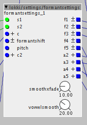

lokki/math/==remap
remaps integers to other integers. if input value is out ouf range, last value in range will be remapped.
also has a hit boolean out, which is on, when values are in range...

lokki/math/==remap
remaps integers to other integers. if input value is out ouf range, last value in range will be remapped.
also has a hit boolean out, which is on, when values are in range...
lokki/math/accumulatorsimple
accumulates signal when inlet is positive, resets when zero or negative.
lokki/math/muls 16bit
saturated mulitply by 16bit, for those times when you want to squarify the hell ouf of a signal.
lokki/math/bitselector

filter-like effect, turn off individual bits of the output, either via the object controls or via control input. the control input is andor'd (^) with the selected bits in the object.
lokki/patches/ratereducer
some fun with sample and hold, geared towards bass-notes...nasty sounding.
lokki/math/quantizelive
bit-depth control via cc. from 1 to 28 bits.
lokki/mix/mix 4-8 gsc
like the original mix objects but for all those cases, when you distribute volume equally among sources. since i do this a lot this saves quite some time and should also be less ram hungry  other "sizes" or k-rate on request.
other "sizes" or k-rate on request.
lokki/ctrl/btn 4 i
allows you to trigger 4 events and outputs an index accordingly. index can be latched or momentary.
Hey thx looks great but I need it for external footswitches, so i need b input.
Also versions with 8 and 16 could be great for building step sequencers for example.
i'm on it. reread your initial post and thought that you needed that. will do 8 and 16 versions as well!
lokki/math/triggerindex 4 & 8 & 16

takes trigger inputs and outputs an index accordingly, index can be latching or momentary. only one switch at a time.
UPDATE
more robust implementation, now also more then one trigger at a time can be processed. there are 4 user definable switch combinations, that will trigger index 5 to 8. also there is now an enc output, which is esentially the four triggers encoded into one 4-bit value (like the encode object in the library)

best is to connect the triggers and look at the numbers displayed in the lower right corner of the object. these are the values you enter into c1-c4 for your switch combinations. an example:
if you want to trigger index 5 by pressing b1 and b2 you would need to set c1 to 3. (since that is what is displayed for pressing the first two switches)
explanation:
3 in binary is 0011, which is the same as the two first switches pressed
your mix object is extremly handy. would it be possible for you to make 6, 7 and 8 Versions of it?
sure, i just uploaded 4, 6, 7 and 8 versions. currently untested but should be fine. let me know if there are any issues.
settings/formantsettings

greatly facilitates the creation of formant filter systems. check the help patch for more in-depth explanation/usage example. basically it is a preset object with 5 vowels (a e i o u) for 5 different singer ranges (0-4:alto, 5-9:bass, 10-14:countertenor, 15-19:soprano, 20-24:tenor). select two of those vowels (s1 and s2) and you can xfade between them via the +c control.
EDIT: added formantshift, pitch and c2 inputs. see help patch for explanation. basically you can shift all the formants via the formantshift control or shift formants dependent on input frequency, and c2 is a crossfade between the formantshift and the pitch input.
lokki/octaver.axp
"analog" octaver based on oc2 schematic/function.
this uses the same mechanisms that the oc2 uses to generate an octave down signal from any audio input. it reacts to dynamics and the waveform of the octaves signal is reminicent of the input. the waveform stitching is slightly different then the one on the oc2, mine is based on valve wizards u-boat circuit.
lokki/sampleratereducer.axp
naive approach at samplerate reduction, only process every n-th sample of the input. lofi ahead and a different take at samplerate reduction with Axoloti.